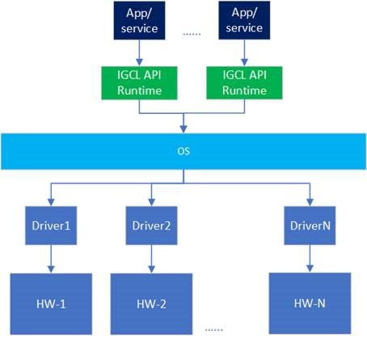
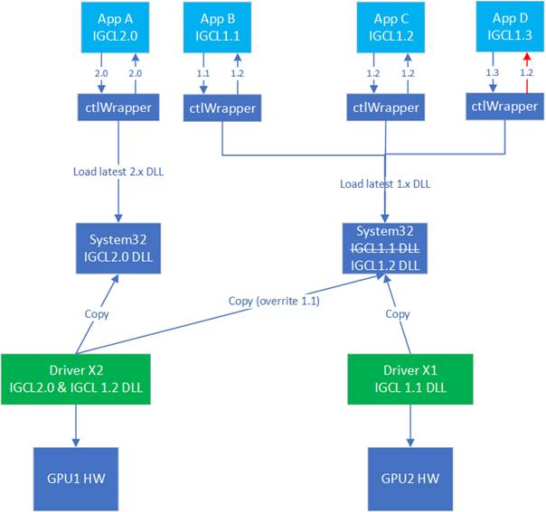

Introduction
Objective
IGCL is meant to be a collection of high level APIs for all control aspects of hardware, primarily graphics. This is replacement of legacy Intel CUISDK which used to be released only to OEM’s and selected customers. IGCL allows global control and tweaking of display, media & 3D capabilities.
Intend of providing API headers, helper files and samples is to help develop specialized GPU control applications & services which need something more than the Operating System provided SDK/API’s. Examples of this include API’s to access DisplayPort AUX bus, using 3DLUT of Intel display pipeline or tweaking media/3D/render performance global feature capabilities. Given the low level nature of these API’s one should be careful in using these.
Display
The display set of API’s help with
Graphics adapter enumeration & properties
Graphics output enumeration & properties
Specific functions to control various display pipeline capabilities like color, scaling, unique configurations, sharpness etc.
See Display API Programming Guide for more details.
Media
The media set of API’s help with
Video post processing color feature control, such as color controls and skin tone enhancement.
Video post processing quality feature control, such as noise reduction, sharpness and contrast enhancement.
See Media Programming Guide for more details.
Gaming
The gaming/3D set of API’s help with controlling various features like
CMAA, texture quality, anisotropic filtering etc.
Various special flip modes
Performance & Telemetry
The core performance & telemetry set of API’s help with various Intel(R) oneAPI Level Zero provided functionalities. IGCL API has an instance of Level Zero driver internally which allows it to talk to Level Zero driver directly as and when required. It will provide an API which allows an application vendor to know of the Level Zero device to talk using an IGCL device adapter handle.
Notes: To test the sample along with Level Zero, please ensure that the Level Zero binaries (primarily ze_loader.dll & ze_intel_gpu64.dll) are in a path accessible by the sample. By default, only administrator users have permissions to perform control operations on resources. Most queries are available to any user with the exception of those that could be used for side-channel attacks. The systems administrator can tighten/relax the default permissions for Level Zero. Performance & Telemetry API’s, i.e., Engine/Fan/Telemetry/Frequency/Memory/Overclock/PCI/Power/Temperature are limited to 64-bit applications as of now. This is a Level Zero limitation. Refer https://spec.oneapi.io/versions/latest/index.html for more details on Level Zero
Fundamentals
The following section provides fundamentals of the API design. For more detailed information, refer to the programming guides and detailed specification pages.
Header files can be found at: https://github.com/intel/drivers.gpu.control-library
Terminology
This specification uses key words based on RFC2119 to indicate requirement level. In particular, the following words are used to describe the actions of an implementation of this specification:
May - the word may, or the adjective optional, mean that conforming implementations are permitted to, but need not behave as described.
Should - the word should, or the adjective recommended, mean that there could be reasons for an implementations to deviate from the behavior described, but that such deviation should be avoided.
Must - the word must, or the term required or shall, mean that the behavior described is an absolute requirement of the specification.
Naming Convention
The following naming conventions are followed:
All functions are prefixed with ctl
All functions use camel case ctlObjectAction convention
All macros use all caps CTL_NAME convention
All structures, enumerations and other types follow ctl_name_t snake case convention
All structure members and function parameters use camel case convention
All enumerator values use all caps CTL_ENUM_ETOR_NAME convention
All handle types end with handle_t
All descriptor structures end with desc_t
All property structures end with properties_t
All flag enumerations end with flags_t
The following coding conventions are followed:
All interface structures are derived from :ref:`ctl-base-interface-t`
All function input parameters precede output parameters
All functions return ctl_result_t
Versioning
There are multiple versions that should be used by the application to determine compatibility:
API Version - this is the version of the API supported by the device.

This is typically used to determine if the device supports the minimum set of APIs required by the application
There is a single 32-bit value that represents an entire collection of APIs
The value is encoded with 16-bit Major and 16-bit Minor parts
Major version increment consist of modified functionality, including deprecate features, and may break backwards-compatibility
Minor version increment consist of additional functionality, including promoted extensions, and must retain backwards-compatibility
The value is determined from calling ctlInit()
In addition to API version, each call will typically have a version field in the interface structure.
Nonpointer structs
A struct passed in as a non-pointer variable should not add new variables which can change the struct size.
They can change reserved fields aong with the comment of which structure & API version supports it
Implementation code should increment the struct specific max supported version.
If new fields are added, struct name should precede with an incrementing number and new function interface should be provided which accepts the new structure.
If new fields are added, the new function name should precede with an incrementing number. E.g. SetParameterX2([in] handle, [in] struct ctl_param_x2_t)
Caller should always fill the struct size and version fields properly as supported by released API spec
Pointer struct
A struct passed in as pointer variable can add new variables to it
They can change reserved fields but should provide the new struct definition separately.
Implementation code should increment the struct specific max supported version.
Caller should always fill the struct size and version fields properly as supported by released API spec.
API versioning between multiple driver installations
Due to various reasons there can be more than one major version of the IGCL API implementation in the system.
The default wrapper implementation provided knows how to select the right major version of the implementation (DLL).
Caller should always pass in the version they are coding for and the ctlInit() call will return back with the implementation’s APIs.
The value returned will be the API version supported by the device and known by the driver.
Caller shall never try to call an interface which the implementation doesn’t have. If caller is using the provided wrapper, this will be taken caller automatically as wrapper won’t find the new interface and will return failure.
Figure below describes a flow where three different implementation get into the system and how the behavior will be
Initially 1.1 DLL is there in the system from driver of say GPU2 HW.
Later user plugs in GPU1 and installs a driver which provides API DLL’s having version 1.2 and 2.0.
Now in the system two DLL’s will be kept each being the latest of their respective major versions, i.e. here 2.0 and 1.2.
Various types of applications negotiate the interface as shown in the top part of the figure.
In the System32 folder only the latest version of the DLL will reside.Even if user downgrades the graphics driver , the newer version in System32 will not be downgraded.
The dll packaged with the graphics driver will be copied in to the respective driver store.But the System32 folder will only have the latest version of the dll.
Driver Version - this is the version of the driver installed in the system.
This is typically used to mitigate driver implementation issues for a feature
The value encoding is vendor-specific but must be monotonically increasing
The value is determined from calling ctlGetDeviceProperties
Error Handling
The following design philosophies are adopted in order to reduce Host-side overhead:
By default, the IGCL API implementation may not perform any form of detailed parameter validation
This should be handled by validation layer(s)
By default, IGCL API won’t provide any protection against the following:
Invalid API programming
Invalid function arguments
Function infinite loops or recursions
Synchronization primitive deadlocks
Non-visible memory access by the Host or device
Non-resident memory access by the device
The IGCL API implementation is not required to perform API validation of any kind
The driver should ensure well-behaved applications are not burdened with the overhead needed for non-behaving applications
Unless otherwise specified, the driver behavior is undefined when APIs are improperly used
For debug purposes, API validation can be enabled via the loader’s validation layer(s)
All API functions return ctl_result_t
This enumeration contains error codes for the IGCL APIs
This allows for a consistent pattern on the application side for catching errors
Multi-threading and Concurrency
The following design philosophies are adopted in order to maximize Host thread concurrency:
APIs in general are free-threaded when the device’s object handle is different.
the IGCL API should avoid thread-locks for these API calls
APIs are not thread-safe when the device’s object handle is the same, except when explicitly noted.
the application must ensure multiple threads do not enter an API when the handle is the same
APIs are not thread-safe with other APIs that use the same driver’s object handle
the application must ensure multiple threads do not enter these APIs when the handle is the same
APIs do not support reference counting of handles.
the application must track ownership and explicitly free handles and memory
the application must ensure that all driver objects and memory are no longer in-use by the device before freeing; otherwise the Host or device may fault
no implicit garabage collection is supported by the driver
APIs can impact system configuration and it’s application job to ensure it listens to system events provided by OS and provide parameters in sync with current system state
In general, the API is designed to be free-threaded rather than thread-safe. This provides multi-threaded applications with complete control over both threading and locks. This also eliminates unnecessary implementation overhead for single threaded applications and/or very low latency usages.
An application is in direct control over all Host thread creation and usage. IGCL runtime will never implicitly create threads. If there is a need for an implementation to use a background thread, then that thread should be created and provided by the application.
Given the system wide impact of these API’s caller should take care of the possibility of another application changing the state using these or OS API’s. Caller shall register with OS events to know of system configuration changes which might impact the API’s they are interested in and update it’s internal state accordingly.
Application Binary Interface
The IGCL APIs in C are provided to applications by a shared wrapper helper file cApiWrapper.cpp. C/C++ applications must include “igcl_api.h” and preferably use the wrapper while calling the API’s. The wrapper will internally load the required implementation and call respective DLL exported functions. Wrapper approach helps with better control on IGCL API DLL’s update and version management.
IGCL uses the default Application Binary Interface (ABI) of the standard C compiler for the platform. An ABI in this context means the size, alignment, and layout of C data types; the procedure calling convention; and the naming convention for shared library symbols corresponding to C functions. The ABI is backward-compatible for API minor version increments such as adding new functions, appending new enumerators, and using reserved bits in bitfields. ABI is not guaranteed to be backward-compatible for API major version increments such as modifying existing function signatures and structures, removing functions and structures, etc.